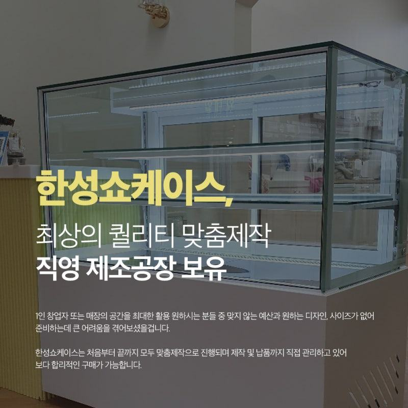
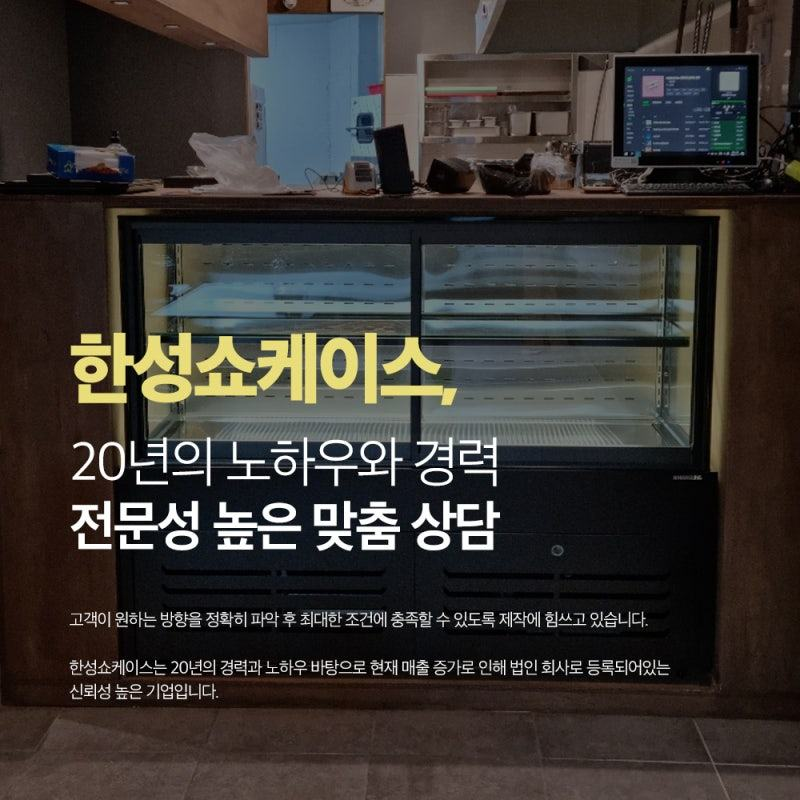
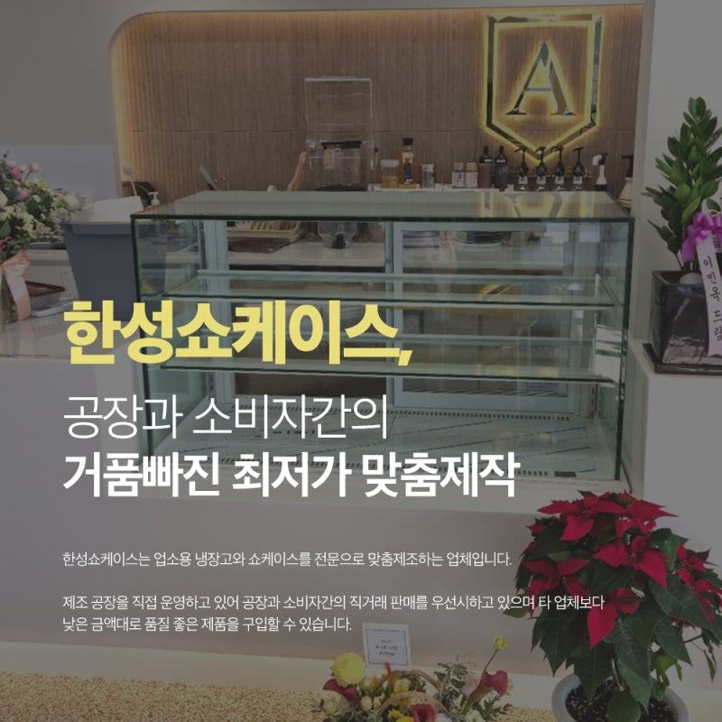
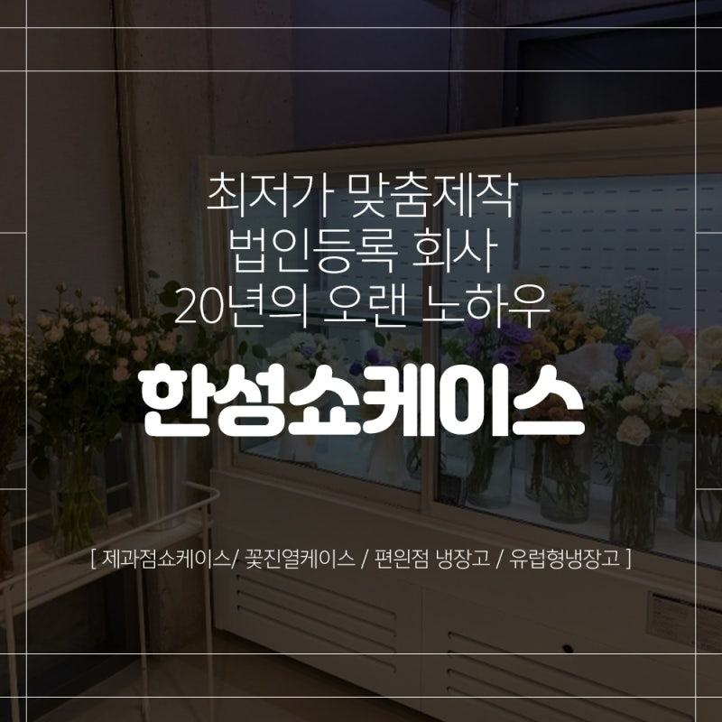
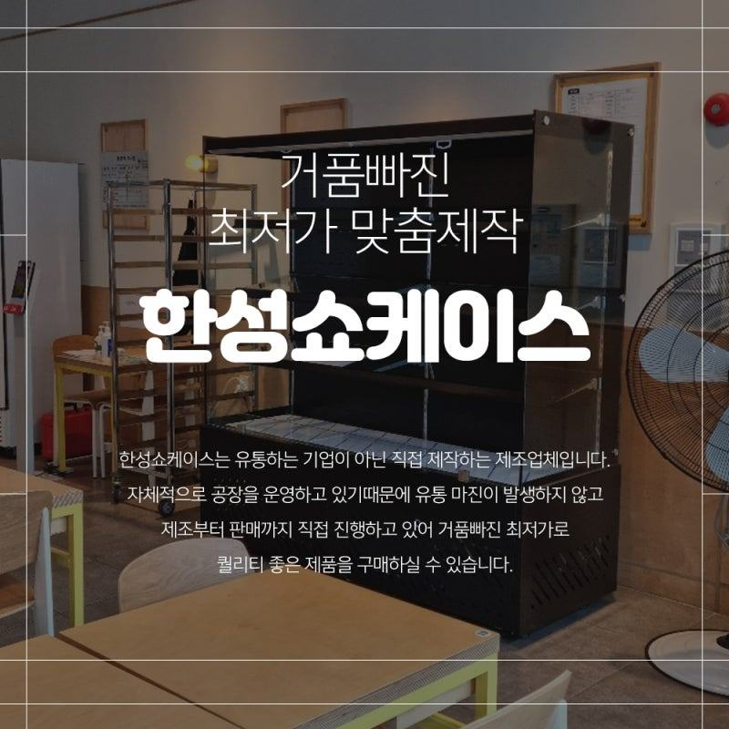
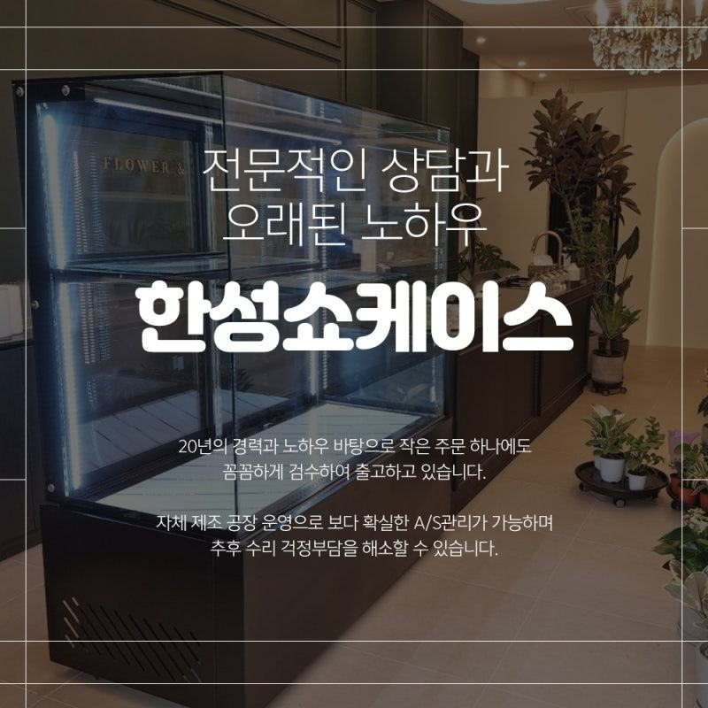
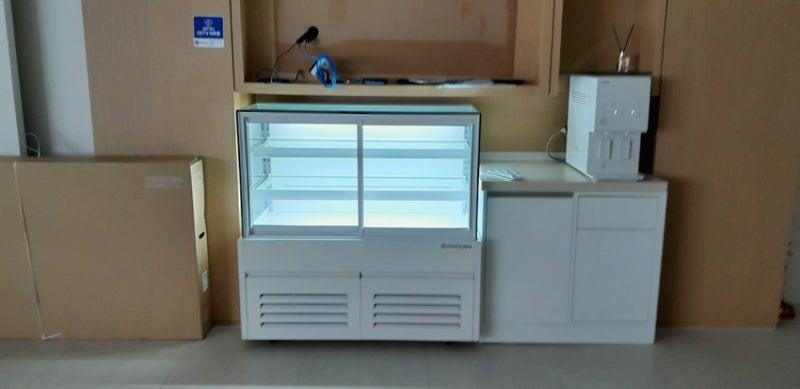

한성제품
편의점 전기요금, 냉장·냉동·온장 장비별로 줄이는 법

편의점 전기요금은 장비 수를 줄이기보다 각 장비가 쉬는 시간을 늘려 주는 쪽에서 줄어듭니다. 오픈 쇼케이스는 심야에 커버를 내리고, 문 달린 냉장고는 닫힘과 패킹을 챙기며, 모든 장비의 기계실 먼지와 통풍 공간을 관리하는 것이 기본입니다.
안녕하세요. 편의점과 마트 매장의 냉장·온장 진열장을 맞춤으로 만드는 한성쇼케이스입니다.
편의점은 문을 닫는 시간이 없는 매장이 많습니다. 손님이 없는 새벽에도 음료 냉장고, 도시락 쇼케이스, 아이스크림 냉동고가 쉬지 않고 돌아가니, 고지서를 받을 때마다 "이걸 어디서 줄여야 하나" 막막하시죠.
매장에는 성격이 다른 장비가 여러 대 섞여 있어서 한 가지 방법으로는 잘 줄지 않습니다. 문 없는 장비, 문 달린 장비, 데우는 장비마다 전기가 새는 지점이 다르기 때문입니다.
오늘은 편의점에 흔히 놓이는 장비를 종류별로 나눠, 영업을 멈추지 않고도 바로 바꿀 수 있는 운용 습관을 정리해 보겠습니다.
1. 도시락·샌드위치 오픈 쇼케이스
문 없이 손님이 바로 집어 가는 다단 쇼케이스는 편의점 냉장 장비 중 냉기가 가장 쉽게 빠져나가는 장비입니다.
진열 칸 앞쪽 가장자리를 넘치게 채우면 위에서 내려오는 냉기 흐름이 끊겨 안쪽 온도가 올라가고, 기계는 더 오래 돌게 됩니다.
손님이 뜸한 심야 시간대에는 나이트커버를 내려 두는 것만으로도 부담이 줄어듭니다. 출입문과 정면으로 마주 보는 자리나 에어컨 바람이 직접 닿는 자리에 놓여 있다면 위치를 옮기는 것도 검토해 보세요.
- 진열 라인을 넘지 않게 채우기
- 심야 시간 나이트커버 사용
- 출입문·에어컨 바람 피하기
2. 음료 냉장고와 워크인 도어
음료 냉장고는 하루 종일 문이 열리고 닫힙니다. 문이 완전히 닫히지 않은 채 손님이 떠나는 일이 잦으면 그 틈으로 냉기가 계속 새니, 문이 스스로 닫히는지 주기적으로 확인하세요.
패킹이 찢어지거나 들뜬 곳은 바로 교체하는 것이 결국 이득입니다.
음료를 채울 때 문을 오래 열어 두는 것도 습관처럼 굳기 쉽습니다. 뒤쪽에서 채우는 구조라면 보충 시간을 정해 한 번에 채우고, 앞쪽에서 채운다면 박스를 미리 옆에 준비해 두고 짧게 끝내 보세요.
문 유리에 김이 자주 서린다면 매장 습도가 높거나 문이 오래 열려 있다는 신호일 수 있습니다. 결로 방지 히터 단계를 무작정 올리기보다 원인부터 확인해 보시는 편이 전기를 아끼는 길입니다.


3. 아이스크림·냉동식품 냉동고
냉동고는 성에가 두꺼워지면 냉각 효율이 떨어져 같은 온도를 지키는 데 더 많은 힘이 듭니다. 뚜껑을 열어 둔 채 상품을 고르는 손님이 많으니 닫아 달라는 안내를 붙이고, 성에가 쌓이면 제때 제거해 주세요.
냉동고 위나 옆에 박스를 쌓아 두는 매장이 많은데, 기계실 통풍구를 막으면 열이 빠지지 못해 콤프레셔가 쉬지 못합니다.
통풍구 주변은 늘 비워 두세요.
- 뚜껑 닫힘 안내문
- 성에 두께 확인
- 통풍구 앞 박스 치우기
4. 겨울철 온장고
날이 쌀쌀해지면 캔커피와 두유를 데우는 온장고가 추가로 돌기 시작합니다. 온장고도 문이 자주 열리면 데운 열이 빠져나가 히터가 계속 일하게 되니, 냉장고와 마찬가지로 닫힘 상태를 챙겨야 합니다.
냉장 쇼케이스 바로 옆에 온장고를 붙여 두면 서로 열을 주고받아 양쪽 모두 손해를 봅니다. 두 장비 사이를 띄우거나 사이에 일반 진열대를 두는 배치가 좋습니다.
상품이 적게 팔리는 시기에는 단 수를 줄여 필요한 칸만 쓰는 것도 방법입니다.
체크리스트
- 오픈 쇼케이스 진열 라인과 나이트커버
- 음료 냉장고 문 닫힘과 패킹
- 냉동고 성에와 뚜껑 안내
- 모든 장비 기계실 먼지·통풍구
- 냉장 장비와 온장고 간격
현장에서 자주 보는 경우: 규격이 맞지 않아 아무 데나 놓인 온장고
날씨가 쌀쌀해지면 온장고 주문이 늘어나는데, 기존에 납품되는 온장고는 규격이 같고 색상이나 세부 디자인을 고를 수 없어 원하는 자리에 놓지 못하는 경우가 많습니다.
결국 남는 자리, 예를 들어 냉장 쇼케이스 바로 옆에 끼워 두게 되고, 인테리어와도 어울리지 않아 아쉬워하시는 사장님을 자주 뵙습니다.
맞춤 제작이라면 매장 자리에 맞춰 크기를 정하고, 원하는 단 수와 온도 조절부 위치, 문 여는 방향까지 고를 수 있습니다.
간접 LED 조명으로 상품이 잘 보이게 하면서, 처음부터 냉장 장비와 열을 주고받지 않는 위치를 잡아 두면 전기 사용도 함께 정리됩니다.





자주 묻는 질문
설정 온도를 올리면 전기요금이 줄어드나요?
필요 이상으로 낮게 잡아 둔 경우라면 도움이 됩니다. 다만 상품별 보관 기준이 있으니, 진열 상품이 요구하는 범위 안에서만 조정하세요.
오래된 쇼케이스는 바꾸는 게 나을까요?
콤프레셔가 지쳐 쉬지 않고 돈다면 전기 사용이 늘고 고장도 잦아집니다. 수리 이력과 냉각 속도를 확인해 교체 견적과 비교해 보시길 권합니다.
기계실 청소는 어떻게 하나요?
전원을 끄고 기계실 앞 그릴의 먼지를 부드러운 솔로 털어 내면 됩니다. 내부 부품까지 손봐야 한다면 A/S를 통해 점검받으시는 편이 안전합니다.
매장 조건에 맞춰 만드는 한성쇼케이스
원하시는 제품 사진과 설치할 공간 사진만 보내 주셔도 매장에 맞는 구성을 추천해 드립니다.
- 전국 240여 개 A/S 전담 센터 운영
- 본사 대량 자재 매입으로 품질 대비 합리적인 가격
- 유럽제·삼성 냉각 콤프레셔 적용
- 국내 최초 쇼케이스 전문 디자이너 상주
매장 폭과 원하는 진열 구성을 알려 주세요. 실측과 견적을 안내해 드립니다.
031-986-2458